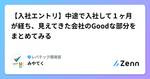
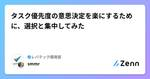
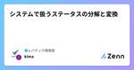
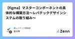
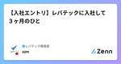

レバテック開発部のフィード
https://zenn.dev/p/levtech
レバテック開発部の公式テックブログです！
フィード

【入社エントリ】中途で入社して１ヶ月が経ち、見えてきた会社のGoodな部分をまとめてみる 1
1
レバテック開発部のフィード
はじめにこんにちは！6月にレバテック開発部に中途で入社した宮下です。まだ入社をして1ヶ月も経っていませんが、新参者だからこそクリアに見える会社のGoodな部分をあげていきたいな〜と思います🌟良いところも悪いところも、長く居ると慣れて当たり前になってしまうので、当たり前になる前にアウトプットします。 1️⃣ 人との繋がり人との繋がりが強いな！って思ってます。この要素がGoodになるかどうかは人によりますが、私にとってはGoodでした。人との繋がりって何やねんって感じですけど、"コミュニケーションの量と範囲"と捉えてもらえたらいいと思います。具体的には以下の3つが大き...
1日前

タスク優先度の意思決定を楽にするために、選択と集中してみた 1
レバテック開発部のフィード
はじめにどうも、レバテックでCREを進めている住村です。レバテック開発部では社内でテックブログ執筆を促進するためのキャンペーンをやってまして、前回の記事がなんと社内のテックブログ執筆のキャンペーンで賞品をいただけました！https://zenn.dev/levtech/articles/aa35d3687b6876賞の連絡をくれた編集長が「何でもいいよ！」と言ってくれたので、遠慮なく犬用の服を選ばさせていただきましたが、それで実際買ってくれたので凄いですね。賞品を着た愛犬。この数分後に芝生で転げ回り、早々に汚しました今回の記事では、前々回の記事で少し触れた、業務の選択と...
4日前

システムで扱うステータスの分解と変換 30
レバテック開発部のフィード
初めにレバテック開発部の今井です。ソフトウェア開発において、データの状態管理は非常に重要です。注文の状態、ユーザーの認証状態、プロジェクトの進行状態など、多岐にわたる状況で、適切な状態管理が求められます。しかし、ビジネス要件の変化や新機能の追加に伴い、状態管理が複雑化し、保守が難しくなることがあります。この記事では、データの状態管理を簡単にするためにMECEを初めとした方法で分析を提案します。これによって、柔軟で効率的なシステム設計が可能になることを目指します。 TL;DRMECEの原則を使ってenum型ステータスを分解する方法を解説するMECEによる分解から一次情報...
5日前
レバテック、Autify始めます！！〜 Autify大臣の事始め 〜 1
レバテック開発部のフィード
はじめにレバテック開発部の江間です。この度、私が所属しているレバテック開発部にE2Eテスト自動化SaaSのAutifyを導入しました。4月中旬より利用を開始して『Autify大臣』なるものをやらせていただき、導入推進を始めて2ヶ月ほど経過しました。先日、開発チーム向けにオンボーディングをして、ひとやま超えたタイミングで導入経緯・導入準備などについて振り返ってみたいと思います。 導入経緯レバテックでは下記のような様々な課題がありました。 1. E2E自動テストコード管理コストの増加OSSツールによるE2E自動テストを実施しているチームでは、メンテナンスにコストの増加...
7日前

【figma】マスターコンポーネントの具体的な構築方法〜レバテックデザインシステムの取り組み〜 2
レバテック開発部のフィード
はじめにはじめまして！レバテックでサービスサイトにおけるデザイン制作のディレクター兼デザイナーを担当しているカリヤです。現在は日々の進行管理業務に加え、デザインシステム『VoLT』の構築と運用に取り組んでいます。構築していく中でも、コンポーネント作成は特に大変でしたが多くの学びも得られました。今回は、デザインシステムを構築していくにあたって、レバテックの各プロダクト共通で使用するfigmaのマスターコンポーネントの具体的な構築方法についてどのように進めたのかを共有します。 まずやったことまずやったことやコンポーネント管理にどんな問題があったのかなど詳しいことに関しては...
11日前

【入社エントリ】レバテックに入社して３ヶ月のひと
レバテック開発部のフィード
はじめにはじめまして、最近オフィスに卓球台が設置されて歓喜しています、小豆畑です。入社してから3ヶ月が経ち、だいぶレバテックの人になった感じがしています。about me'94生まれ ♀職歴2018.4~：SI系のシステム会社でエンジニア2024.3~：レバテックでエンジニア現職：レバテックフリーランス、レバテッククリエイターの開発を担当趣味：陶芸、運動、植物 レバテック開発部ってどんな感じ？この記事では入社3ヶ月の私が、「レバテック開発部ってどんな感じ？」を普段の業務と、社内の雰囲気、オンボーディング（コミュニケーション編、技術・業務編）にわけて...
12日前

実装した承認フローが、見事に形骸化して Revert したのでネタにします。
レバテック開発部のフィード
はじめに業務委託の丹羽です。レバテックフリーランス経由で、レバテック開発部のSREチームに業務委託で参画させていただいています。業務委託の私でも、我が物顔でレバテック開発部のテックブログに寄稿して構わないとのことなので、今回は掲題の件について、振り返りながら記事にさせていただきます。 ざっくりこんな人AWSの基盤となるクラウド部分と、EC2内部でOS・ミドルウェアをメインに、各パラメータを修正したり、それらをAnsibleに書き起こしてCodeCommitで管理しているくらいのIaC経験があるインフラの人でした。そこからスキルアップと挑戦をしたいという思いで、フリーラン...
14日前
マルチシステムな開発組織における独立デプロイ可能なチームについて考察してみた
レバテック開発部のフィード
はじめにマイクロサービスを構築する大きな利点に独立デプロイ可能性という考え方があります。独立デプロイが可能な状態とは他のシステムに依存することなくそのマイクロサービス単体でデプロイできる状態のことを指します。マイクロサービスの運用では単一サービスを単一チームで運用することが理想とされています。しかし、実際の開発現場では単一サービスを単一チームで運用することは難しく妥協点を見つけていく必要があると考えられます。レバテックでは他のチームから独立してデプロイ可能なチームを編成したのでその背景とメリット・デメリットを考察します。 レバテックの状況レバテックシステムの全体像...
18日前
デイリースクラムあるある早く言いたい
レバテック開発部のフィード
それデイリーやない。レイニーや。 はじめにこんにちは。学園アイドルマスターにハマっているスクラムマスターの池永です。レバテック開発部ITSプロダクト開発グループに所属しており、日々チームが強く、楽しくなれるように試行錯誤しております。先日、以下の記事を投稿したのですが、他のスクラムイベントにもあるあるはあるよなと思い、デイリースクラムのあるあるも早く言いたくなりました。https://zenn.dev/levtech/articles/c1f9eae9cd8759こちらも何か参考になる情報がありましたら幸いです。 話すことスクラムにおけるデイリースクラムのあるある...
20日前
ライブラリの自動メンテナンスにRenovateを導入してみた
レバテック開発部のフィード
Renovateとはライブラリの依存関係を検出し、バージョンを自動更新してくれるツール。様々な言語やバージョン管理ツールに対応している。(公式サイト)類似ツールはDependabot 導入背景自分が担当しているシステムはyarn+Node構成でライブラリの定期メンテナンスはGithubActionsでyarnコマンドを駆使して頑張って自動化していましたが、yarnV4へのメジャーバージョンアップ対応でのコマンドの非互換や仕様変更によりGithubActionsが動かなくなってしまいました。GithubActions内で使用するActionsやコマンド自体のメンテコストもあ...
22日前
アジャイルを採用したソフトウェアプロジェクトの失敗率はその他の手法と比べて268％も高いってほんと？
レバテック開発部のフィード
はじめに今朝、こんな記事を読みました。https://gigazine.net/news/20240607-higher-failure-rates-for-agile/ソフトウェアの開発手法としてアジャイルを採用したプロジェクトはアジャイル以外の手法を採用したプロジェクトに比べて失敗率が268％も高いという調査結果が発表されたという内容でしたが、にわかには信じがたい内容だったので研究結果の考察をしてみました。!個人の考察になるので組織的な思考などとは異なることをご理解ください。また、当内容に違和感など感じる場合はご指摘いただけますと幸いです。 違和感の正体まず記...
25日前
Datadog→New Relicの移行を決めた際のADRを公開します！
レバテック開発部のフィード
はじめにレバテック開発部、SREチームに所属している金澤です。弊社開発部では、Datadogで行っていた監視からNewrelicを用いたオブザーバビリティへの移行を行う決定をしました。そして、なぜオブザーバビリティを採用したのか、DatadogからNewrelicへ移行したのかといった意思決定をADRとして記録し、社内に展開しています。今回はこのADRの内容を公開します！!ADRとはアーキテクチャディシジョンレコード（ADR）は、設計の確定に至った過程について、設計図や実装からは汲み取れない意図を記録するもの。その決定が行われた理由を記載し、将来同様の問題に直面した際に...
1ヶ月前
データ戦略室で専門性向上のためにスキルマップを運用してみた！
レバテック開発部のフィード
はじめにはじめまして。データ戦略室データアナリティクスグループの丸山です。私は現在チームリーダーとして、メンバーの担当PJの進捗管理や育成を担当しています。データ専門職のメンバーのスキルアップを図っていく上で、以下の2点を課題に感じていました。データ関連の職種は近年役割が細分化されている傾向にあり、職種によって求められるスキルも変わってくる(具体的にどのような職種が存在するかは後述します)目先の業務に注力しすぎると、「数年などの中長期のスパンで、自分がどのようなポジションのデータ人材になっていきたいか」が不明瞭になりがち上記の課題を解決する一助として、データ戦略室では...
1ヶ月前
プロダクトを横断したFigmaコンポーネント構築 〜「インスタンスガイドライン」を策定した話〜
レバテック開発部のフィード
はじめにはじめまして！レバテックでプロダクトデザイナーをしている成田です。現在は日々のプロダクトデザインの業務に加え、デザインシステム『VoLT』の構築と運用に取り組んでいます。なんとか社外公開まで漕ぎ着けた『VoLT』ですが、プロジェクトが開始してすぐの頃は「無理だ」と弱音を吐きたくなるほど課題が散見されていました。実際、私は何度も「え〜無理なんだが」と声に出しながら作業を進めていました（笑）本記事では、Figmaでのコンポーネント管理の話を中心に、抱えていた課題を解決するために生み出した 「インスタンスガイドライン」 というものについてお話しできればと思います。!本...
1ヶ月前
データモデリングに向き合ってみた話とその気づき
レバテック開発部のフィード
レバテック開発部の前原です。以前はプラットフォームチームとしてマイクロサービスの開発を行っていましたが、開発部の新たな試みにより、事業の特定の問題を解消するチームとして社内の営業支援システムの改修を行っています。 はじめにレバテックの社内の営業支援システムでは、数多くのステークホルダーからの要望をもとに開発が行われます。ステークホルダーからは「このテーブルにカラムを追加してください」といった具体的な要望が多く寄せられます。開発部ではこれらの要望に対して検討を重ね、要件の調整を行いますが、多くの場合、そのままカラムを追加することが多いです。カラムの追加によって要望が実現されるかは考...
1ヶ月前
デザインシステムをマルチフレームワーク(React/Vue.js)に対応させてみた
レバテック開発部のフィード
はじめにこんにちにんにん、 art です。僕が所属するレバテック開発部では、最近デザインシステム『VoLT』が誕生しました。レバテックでは複数のプロジェクトが運用されており、フロントエンドの技術スタックはVue.js × NuxtReact x Next.jsの２つが採用されています。ですので、両方の技術スタックに対応したデザインシステムを作る必要があるわけですね。あら大変。_(:3 」∠ )_というわけでこの記事では、『VoLT』のUIコンポーネントライブラリを制作するにあたり、肝となったデザインシステムのマルチフレームワーク対応についてお話しします。...
1ヶ月前
ふりかえりあるある早く言いたい
レバテック開発部のフィード
はじめにはじめまして。レバテック開発部ITSプロダクト開発グループ所属の池永です。私は現在スクラムマスターとしてチームに参画しており、日々チームが強く、楽しくなれるように試行錯誤しております。かれこれ一年半ほどスクラムマスターを経験させていただいてきましたが、色んな壁にぶつかってきました。特にスクラムにおける「ふりかえり（レトロスペクティブ）」において生じた壁について色んなエンジニアと話しているうちに、あるあるなんだなぁ〜と感じたため、この記事を書いております。この記事では自身のぶつかってきた壁と、そこに対してどのようなアプローチを取ったか、そしてどうなったかを少しだけ共...
1ヶ月前
ALBのリスナールールをIaC化したらタイミングよく恩恵を受けられた話
レバテック開発部のフィード
TL;DR手動管理されていたリスナールールをIaC化したIaC化するためにTerraformのimportブロック使った思わぬ恩恵受けた手動更新のミスを減らせるぜ〜くらいの想定だった 元々どんな状態だったか本番環境のリスナールールはコード管理されていて、ステージング環境のリスナールールは手動管理されていました。（ALB自体のリソースはTerraformで管理されていましたが、リスナールールだけ手動で更新していたという状況）ステージングだけ手動更新しているのも気持ち悪いなあ…というお気持ちと、新規参画者が入ってきた時に「なんでステージングだけ手動更新？」って...
1ヶ月前
認定スクラムマスターになったので学んだことをまとめる！
レバテック開発部のフィード
はじめにどうも、認定スクラムマスターの瀬尾です。弊社ではエンジニアの支援制度として認定スクラムマスター取得の補助があります。これを利用して Certified ScrumMaster （CSM） を取得したので、その研修で学んだスクラムの基礎をまとめ、更にふ〜んとなったことや疑問に思ったことについて書いていけたらと思います！私が受講したのは、Joe Justice 先生の認定スクラムマスター講座です。2日間の研修があったのち、Webテストを受けて合格しました。ちなみに合格すると合格証と下のバッジがもらえます。Linkedin にも資格を登録してもらえました。 受講の背景を...
2ヶ月前
phpのmax_execution_timeを超えて処理された場合にstacktraceがない理由を深ぼってみた
レバテック開発部のフィード
はじめにエラー調査をする際にstacktraceを活用すると思います。しかしあるとき、設定しているmax_execution_timeを超えたというエラーを調査する際に、出力された内容にstacktraceがなく調査が難航しました。なんで出力してくれないんだよ！と思いながらもその理由を深ぼってみました。 最初に結論FatalErrorの場合はstacktraceを渡さずにErrorのインスタンスを生成しているため、ログ出力されていなかった。 検証した環境PHP 8.2Laravel 10.45.1 調査開始！ 1. まずはローカル環境で再現させる 準備...
2ヶ月前